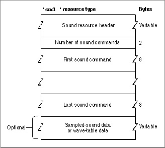
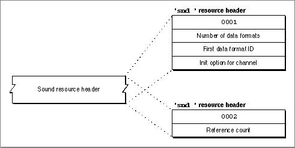

The Sound Resource
You can store sound commands and sound data as a resource with the resource type'snd '. Resource IDs from 0 to 8191 are reserved by Apple Computer, Inc. You may use all other resource IDs for your'snd 'resources.You can use the
GetResourcefunction to search all open resource files for the first'snd 'resource type with the given ID. The'snd 'resource type defines a sound resource. Figure 2-8 shows the structure of a sound resource.Figure 2-8 The
'snd 'resource type
Often, you can create a sound resource simply by using the
SndRecordfunction, documented in the chapter "Introduction to Sound on the Macintosh" in this book. However, you can also define a sound resource manually. This is especially useful for sound resources that are simply series of sound commands and contain no sampled-sound data. Also, you might construct a sound resource that contains wave-table data manually. A sound resource contains the following elements:The format of the sound resource header differs depending on whether the
- Sound resource header. The gives information about the format of a sound resource, as explained below.
- Number of sound commands. Following the sound resource header is a word indicating the number of sound commands contained in the resource.
- Sound commands. Each sound command is 8 bytes, which includes 2 bytes that identify the command, 2 bytes for the command's first parameter, and 4 bytes for the command's second parameter. When a sound command contained in an
'snd 'resource has associated sound data, the high bit (defined by thedataOffsetFlagconstant) should be set. This tells the Sound Manager that the value in the second parameter is an offset from the beginning of the resource and not a pointer to a memory location.- Sound data. For a format 1
'snd 'resource, this field might contain wave-table data or a sampled sound header that includes sampled-sound data. For a format 2'snd 'resource, this field should contain a sampled sound header that includes sampled-sound data.'snd 'resource is format 1 or format 2. Figure 2-9 illustrates the formats of the two types of sound resource header. Both sound headers begin with a format field, which defines the format of the sound resource as either $0001 or $0002.Figure 2-9 The sound resource header

- Format 1 sound resource header. For format 1
'snd 'resources, the sound resource header includes a word that indicates the number of data types to be sent to the sound channel. Because a sound channel cannot play more than one type of sound data, you should typically specify either $00 or $01 in this field. If you specify $01 or more, then the sound resource header contains both a word specifying the data type and a long word specifying the initialization options for each data type.- Format 2 sound resource header. For format 2
'snd 'resources, the sound resource header next includes a single word that the Sound Manager ignores. This word is known as the reference count field. Your application can use this field as it pleases.